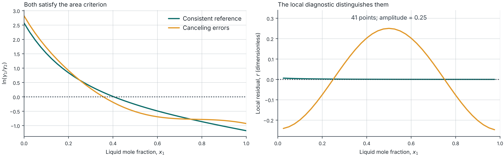

Thermodynamic consistency and liquid stability
Session 3: Holiday independent study · 180 minutes
Your independent lesson
Your action: Open the worksheet and guide below. Keep this deck open, then advance to the schedule. Preparation is part of minutes 0–15.
This holiday lesson takes 180 minutes, including your calculations, lab work and a break. Work individually. No live demonstration or partner is required.
- Practice worksheet, 4 pages: complete Sections A–I in order.
- Lab guide, 3 pages: exact controls and interpretation checks.
- Worked solutions: open each section after your attempt.
The 3-page background reading is optional. All required instructions are here.
The 180-minute route
Your action: Start a timer. Use elapsed times as a guide and pause the slides to work. All required tasks fit inside this schedule.
| Elapsed | Activity | Worksheet |
|---|---|---|
| 0–15 | Lab 08 review and one gamma calculation | p. 1, A |
| 15–35 | Gibbs–Duhem and applicability | p. 1, B |
| 35–50 | Area calculation by hand | p. 1, C |
| 50–90 | Lab 03 comparison and interpretation | p. 2, D–E |
| 90–100 | Break | |
| 100–120 | Stability and lever rule | p. 3, F |
| 120–165 | Lab 04 investigation | p. 3, G |
| 165–180 | Self-review, exit ticket and feedback | p. 4, H–I |
Review attempt · 0–10 min
Your action: Complete worksheet p. 1, A1–A3. Use this slide and a calculator. Attempt the questions before advancing.
A1. Define liquid composition x_1, vapor composition y_1, overall composition z_1 and activity coefficient \gamma_1.
A2. For the synthetic Lab 08 observation, calculate:
\gamma_1=\frac{y_1P}{x_1P_1^{sat}}= \frac{0.704857144627(158.707198211)}{0.5(150)}
Both pressures use kPa. Assume ideal vapor and negligible Poynting correction.
A3. Does a small model fitting error prove thermodynamic consistency?
If needed, revisit only the relevant chapter of the Lab 08 video within this review time.
Review check · 10–15 min
Your action: Check A1–A3. Write corrections beside your first answers. If you opened the Lab 08 video, close it and continue here.
x_1 and y_1 describe compositions within each phase. z_1 describes the overall mixture. \gamma_1 relates liquid activity to composition: a_1=x_1\gamma_1.
\gamma_1=1.491545\qquad \exp(0.399813)\approx1.491546
The small rounding difference is expected. Gamma is dimensionless.
A fit measures how well a selected model reproduces observations. A consistency test examines a thermodynamic constraint, subject to its assumptions and data coverage.
Gibbs–Duhem · 15–21 min
Your action: Read this slide, then complete worksheet p. 1, B1. Explain what the equation constrains in one sentence.
For a binary liquid at fixed temperature and pressure:
x_1\,d\ln\gamma_1+(1-x_1)\,d\ln\gamma_2=0
The activity coefficients cannot vary independently with composition.
Define the dimensionless excess Gibbs energy:
\widetilde g^E=\frac{g^E}{RT} =x_1\ln\gamma_1+(1-x_1)\ln\gamma_2
At fixed T,P, its slope equals \ln(\gamma_1/\gamma_2). This connects the local diagnostic to the activity data.
The experimental path · 21–27 min
Your action: Complete worksheet p. 1, B2. State the omitted term for an isothermal path and the needed correction for an isobaric path.
For changing T and P, with molar excess properties:
\sum_i x_i\,d\ln\gamma_i =-\frac{h^E}{RT^2}\,dT+\frac{v^E}{RT}\,dP
| Data path | What the diagnostic needs |
|---|---|
| Isothermal VLE, changing pressure | The lab neglects the excess-volume pressure term. |
| Isobaric VLE, changing temperature | A local test needs the excess-enthalpy term. |
For real isobaric data, missing independent h^E prevents the lab from assigning a local consistency verdict. The synthetic correction comes from its generator.
Which method applies? · 27–35 min
Your action: Read the comparison and complete worksheet p. 1, B3. Use Lab guide p. 2 if you need the definitions. No Lab calculation yet.
| Method | Evidence and limitation |
|---|---|
| Isothermal area | Full composition range, with the pressure-term approximation. Opposite errors can cancel. |
| Local differential | Checks a slope relation. Numerical differentiation amplifies noise. |
| Herington | Empirical allowance for an isobaric boiling range. It does not supply measured h^E. |
| Van Ness-type | Tests reproduction of P and y by a selected activity model. |
“Not applicable,” “not assessed” and “not run” are different from “outside this criterion.” Record the reason with the result.
Area exercise · 35–43 min
Your action: Complete worksheet p. 1, C1–C3. Calculate the signed trapezoid areas, then repeat after adding 0.2 to every L value. Stop before the solution.
Synthetic values, with endpoint limits supplied analytically:
| x_1 | 0 | 0.25 | 0.50 | 0.75 | 1.00 |
|---|---|---|---|---|---|
| L=\ln(\gamma_1/\gamma_2) | 2 | 1 | 0 | −1 | −2 |
S\approx\sum_j\frac{L_j+L_{j+1}}{2}(x_{j+1}-x_j)
The integral should vanish under the stated isothermal approximation and pure-liquid reference conventions. Explain why a zero value alone cannot certify real measurements.
Area solution · 43–50 min
Your action: Check C1–C3. Keep the signed integral S separate from the lab’s normalized score D.
Baseline interval areas: 0.375,\ 0.125,\ -0.125,\ -0.375.
S=0.5-0.5=0\qquad S_{\text{shifted}}=0+0.2(1-0)=0.2
Lab 03 labels this signed integral I. It also reports:
D=100\frac{|A_+-A_-|}{A_++A_-}
A_- is the positive magnitude below zero. The lab uses D<5\% for its isothermal area criterion. D is undefined when both areas vanish.
Real interior observations do not supply missing endpoint limits. Extrapolation remains an assumption.
Local and global checks · 50–53 min
Your action: Open Lab 03 and Lab guide p. 1. Keep worksheet p. 2 ready. Read this diagnostic before changing controls.
For the isothermal approximation:
r(x_1)=\frac{d\widetilde g^E}{dx_1} -\ln\!\left(\frac{\gamma_1}{\gamma_2}\right)
Lab 03 uses interior finite differences and the teaching score 100\,\mathrm{mean}|r|, with a threshold of 5.
An error may have zero integrated area while leaving a nonzero local residual. A mean score can also hide a narrow defect, so inspect the plotted shape.
This teaching diagnostic differs from the NIST/Kojima point test, which uses a fitted Padé slope.
Lab 03 baseline · 53–60 min
Your action: Set these exact controls. Complete worksheet p. 2, D1, then save a screenshot or click Export all results.
| Control | Setting |
|---|---|
| Data set | Synthetic · isothermal, 350 K |
| Controlled perturbation | Consistent reference |
| Sampling resolution | 41 points |
| Inspect | Log-activity ratio & integrated area |
Record I, D and the area status. Change Inspect to Local Gibbs–Duhem residual and record its score and status. Save as week03-reference.json.
Controls update automatically. The clean reference disables Amplitude. This is Lab 03’s own synthetic data, distinct from the Lab 08 example.
Canceling errors · 60–67 min
Your action: Complete D2. Change only the perturbation as below, with amplitude 0.25. Inspect both plots and retain the baseline for comparison.
Set Controlled perturbation to Canceling errors · zero net area. Set Amplitude to 0.25. Keep 350 K and 41 points.
The generator adds opposite weighted changes to the two log activities. Its added log ratio is:
f(x_1)=0.25\cos(2\pi x_1),\qquad \int_0^1 f(x_1)\,dx_1=0
Record the new area and differential results. Does a small D establish agreement with the local Gibbs–Duhem relation?
Save this case with a distinct name, such as week03-cancel.json.
A localized defect · 67–74 min
Your action: Complete D3. Choose Localized defect near x₁ = 0.35. Keep amplitude 0.25, 350 K and 41 points.
- Record the area and differential scores and statuses.
- In Local Gibbs–Duhem residual, locate the largest departure.
- Compare the local shape with the single mean score.
A criterion describes its own numerical rule. A visible localized defect can remain below an aggregate threshold.
Save this case separately. If time remains, compare 161 points, then return to 41. A changed derivative score may reflect sampling resolution.
Model reproduction · 74–80 min
Your action: Complete D4. Return to Consistent reference at 350 K and 41 points. Click Run modeling test once, then inspect Modeling residuals.
Record the Van Ness-type values: pressure error \Delta p in percent and vapor-composition error \Delta y in percentage points.
The lab fits two constant NRTL parameters at 350 K, with \alpha=0.47. Its criteria are \Delta p<1\% and \Delta y<1 percentage point.
Herington reads “Not applicable” for this isothermal case. For isobaric data it uses D-J<10, where J=150(T_{max}-T_{min})/T_{min} in kelvin.
The clean fit recovers the generator within numerical error. This demonstrates selected-model reproduction. These teaching variants differ from the full NIST TDE implementations.
Area versus local evidence · 80–85 min
Your action: Compare D1 and D2 with these plots. Answer worksheet p. 2, E1 in your own words before advancing.

Reference: D\approx0.079\%, local score \approx0.118. Canceling error: D\approx0.074\%, local score \approx15.599.
Interpretation · 85–90 min
Your action: Check E1 and complete E2. Attempt your explanation, then compare with worked solutions Sections D–E.
E1. Why can the canceling-error case meet the area criterion while the local diagnostic flags a departure?
E2. Write a claim, its numerical evidence, and one limitation. Include your data settings and test applicability.
Useful structure: “At [settings], D= … and the local score is … . These results support … under … . They do not establish … .”
Before continuing, keep the baseline and changed-case results. The synthetic construction demonstrates a test limitation. It does not estimate experimental uncertainty.
Break · 90–100 min
Your action: Take a 10-minute break. Leave your files open. Return to this deck and worksheet p. 3 at minute 100.
Next: a model can satisfy Gibbs–Duhem and still predict liquid separation.
The new question is whether one liquid or a split has the lowest admissible Gibbs energy.
Liquid stability · 100–105 min
Your action: Read the definition and complete worksheet p. 3, F1. Explain what equality of chemical potentials leaves to check.
At fixed T,P, the stable state minimizes total Gibbs energy subject to the material balance.
For a binary liquid, define dimensionless mixing Gibbs energy:
\widetilde g(x)=x\ln x+(1-x)\ln(1-x)+\widetilde g^E(x)
Equality of chemical potentials identifies candidate coexisting phases. A candidate split must also provide a globally supporting common tangent.
A model that satisfies Gibbs–Duhem can have a nonconvex mixing-energy curve. Consistency does not guarantee a homogeneous stable liquid.
Common-tangent condition · 105–110 min
Your action: Read this condition. Complete the hand calculation F2 on the next slide, then use this condition for F3. Lab 04 begins at minute 120.
At two distinct coexisting compositions:
\widetilde g'(x^\alpha)=\widetilde g'(x^\beta) =\frac{\widetilde g(x^\beta)-\widetilde g(x^\alpha)}{x^\beta-x^\alpha}
The line must lie at or below the Gibbs curve throughout the admitted composition interval.
A line that touches twice but crosses above the curve fails this global support check. A root with x^\alpha=x^\beta does not establish two distinct phases.
Positive local curvature alone cannot prove global stability.
Lever-rule attempt · 110–116 min
Your action: Complete worksheet p. 3, F2. Use only these illustrative endpoints and a calculator. Attempt both feeds before advancing.
Suppose a globally supported tie line has x_1^\alpha=0.20 and x_1^\beta=0.80.
f_\beta=\frac{z_1-x_1^\alpha}{x_1^\beta-x_1^\alpha}, \qquad f_\alpha=1-f_\beta
Find both liquid fractions at z_1=0.50, then at z_1=0.35. Check:
z_1=f_\alpha x_1^\alpha+f_\beta x_1^\beta
Here \beta labels the component-1-rich liquid. The supplied endpoints are a hand example, not the expected Lab 04 values.
Lever-rule check · 116–120 min
Your action: Correct F2, then complete F3 using the common-tangent condition. Open Lab 04 and Lab guide p. 3.
| Overall composition z_1 | f_\alpha | f_\beta |
|---|---|---|
| 0.50 | 0.50 | 0.50 |
| 0.35 | 0.75 | 0.25 |
For the second feed:
0.75(0.20)+0.25(0.80)=0.35
At unchanged coexistence conditions, moving the overall composition inside the same tie line changes the amounts. The two coexisting compositions remain fixed.
Lab 04 baseline · 120–130 min
Your action: Complete worksheet p. 3, G1. Make a prediction, then select the exact preset below and record its actual results.
In Explore a state, choose Unstable · A = 3, z₁ = 0.50. Verify:
- Liquid model: Margules · 1 parameter
- Interaction parameter A: 3, Feed mole fraction z₁: 0.50
- View: Gibbs energy & common tangent
Click Find equilibrium if you typed a value. Record both coexisting compositions, both liquid fractions, and Gibbs energy decrease / RT.
This hypothetical fixed-T,P model assigns no physical temperature. Keep its parameters unchanged throughout G1–G4.
One changed feed · 130–140 min
Your action: Complete G2. First save the baseline using Export study JSON. Change only Feed mole fraction z₁ to 0.35, then click Find equilibrium.
Record the same outputs for the changed feed.
| Compare | Question |
|---|---|
| x_1^\alpha and x_1^\beta | Did the coexistence endpoints change? |
| f_\alpha and f_\beta | Did the amounts change? |
| Overall balance | Does the split reconstruct the new z_1? |
Use the endpoints calculated by the lab. Reusing 0.20 and 0.80 from the hand example would check a different tie line.
Independent balance · 140–150 min
Your action: Complete G3 with your calculator. Show the substituted calculation using the lab’s endpoints, then compare your fraction with the displayed value.
f_\beta=\frac{0.35-x_1^\alpha}{x_1^\beta-x_1^\alpha}
z_{1,\mathrm{check}}=(1-f_\beta)x_1^\alpha+f_\beta x_1^\beta
Check 0\leq f_\beta\leq1 and f_\alpha+f_\beta=1.
A balance proves that amounts and compositions agree with the feed. You still need the Gibbs-energy stability check.
Use additional digits from the JSON export if display rounding causes a small mismatch.
Global support · 150–160 min
Your action: Complete G4. Open Verify the equilibrium in Lab 04. Inspect its numerical checks and the full Gibbs energy & common tangent plot.
Explain why the calculated split qualifies as stable within this model:
- The two liquid compositions are distinct.
- Chemical potentials agree within the reported numerical tolerance.
- The common tangent supports the entire Gibbs curve.
- The phase amounts satisfy the feed balance.
The homogeneous feed label describes the hypothetical single liquid at z_1. The equilibrium inside the miscibility gap consists of two liquids.
Investigation check · 160–165 min
Your action: Compare G1–G4 with worked solutions Section G. Save the changed-feed JSON and one comparison table or plot. Then open worksheet p. 4.
Your record should identify the model, A=3, both feed compositions and the calculated tie-line endpoints.
Check the key distinction: phase compositions describe each liquid; phase fractions describe how much of each liquid exists.
Keep a numerical balance and the global support evidence with your explanation.
LLE fitting and VLLE are optional extensions. They are outside this required 180-minute lesson.
Self-review attempt · 165–169 min
Your action: Answer worksheet p. 4, H1–H4 without the solutions. Use one or two sentences per question, with the short calculation for H4.
- Does meeting an area criterion guarantee all local relations are satisfied?
- What can a differential departure mean, and which assumptions matter?
- What evidence does a small selected-model fitting error provide?
- For supported endpoints 0.20 and 0.80 with z_1=0.35, find f_\beta. What establishes stability beyond the balance?
Finish your own answers before advancing.
Self-review check · 169–172 min
Your action: Correct H1–H4 in a different color or add a note. Use the separate worked solutions if you need more detail.
- Opposite local errors can cancel in an area integral.
- A departure prompts checks of data, property inputs, path corrections and numerical differentiation. A missing required correction prevents a verdict.
- A small error demonstrates reproduction by that model and those property assumptions. It does not establish general predictive accuracy.
- f_\beta=(0.35-0.20)/(0.80-0.20)=0.25. Stable coexistence also needs distinct phases and a globally supporting common tangent.
Exit ticket · 172–177 min
Your action: Open the existing Session 3 form below, or scan the QR. Follow worksheet p. 4, Section I.
In the concept answer, explain when a calculated liquid split represents stable equilibrium.
In the evidence answer, include your Lab 03 comparison: area versus local diagnostic, with settings and numerical results. Add your Lab 04 balance if space permits.
This form is anonymous. It does not identify individual attendance.

Feedback and saved work · 177–180 min
Your action: Finish the feedback fields in the same form and submit once. Wait for “Response received.” Then check the files listed below.
Report how the pace and lab access worked for independent study. Name one explanation or instruction that still needs improvement.
Keep:
- Your completed worksheet, including original attempts and corrections.
- The Lab 03 comparison and exports or screenshots.
- The Lab 04 baseline and changed-feed evidence, with your balance.
No additional compulsory homework follows this lesson.